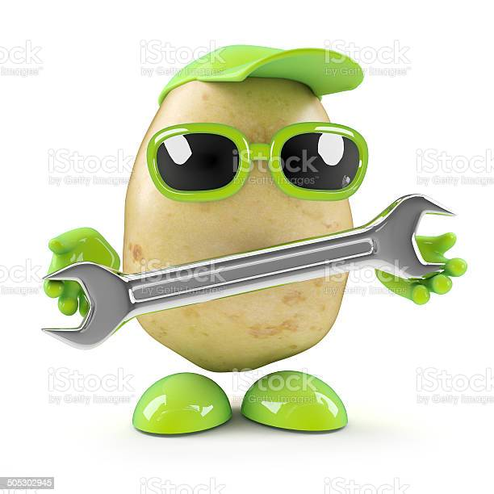

Watch in awe as your potato blazingly fastily compiles chromium so you can watch videos of potatoes dancing. I don't judge. Are you an epic gamer? Now, you can play minecraft with shaders on because you have far too much money, I mean seriously man, come on. Video editing? No problem! Use adobe software with it crashing less than 95% of the time! (90% is about as good as we can do, sorry.)
Blazingly fast ⚡️
Tooling for experts ⚙️

Tooling so good you can make your potato into a motercycle so you can procede to your local farm and burn all of the carrots! Yes, you should do this and we 100% endorse burning carrots. Carrots are terrible vegetables that deserve to be destroyed at all costs. Install a flamethrower to obliterate any carrot you see! Easy access to memory so you can make sure you keep track of how many carrot's you have burned so far.